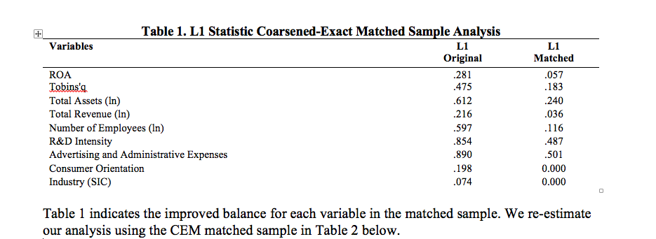
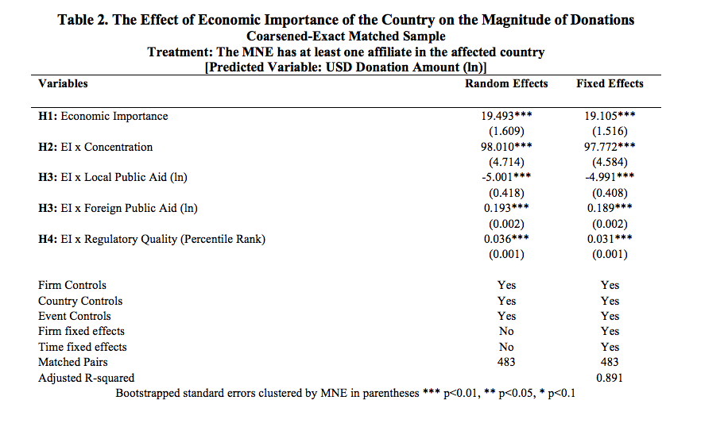

Coarsened-Exact Matched Sample
One concern regarding the findings is that the decision to enter a country is endogenous to the likelihood of responding to institutional disruptions. That is, given the geographical (and, thus, political, and socioeconomic) heterogeneity in the context of exposure to country disruptions, firms with a similar propensity to donate self-select into specific institutional environments. The statistical problem here is that the organizational behavior and economic importance are both moving in the same direction as an unobserved factor (e.g., disaster-risk aversion). To mitigate this risk, we applied coarsened exact matching (CEM) (Iacus et al. 2011) to balance the baseline propensity to donate between the treatment (i.e., firms with at least one affiliate in the affected country) and the control groups (i.e., firms with no affiliates in the affected country). The matching uses variables that the extant literature has identified as potential drivers of corporate philanthropy: ROA, Tobins’q, total assets, total revenue, number of employees, R&D Intensity, advertising and administrative expenses, consumer orientation, and industry. While we are unable to rule out the existence of all unobservable factors and therefore are careful in our interpretation of the results, the CEM provides additional information that is consistent with our theory.
We used no-replacement and targeted a treatment-to-control ratio of 1:10 but tested up to 1:2 for robustness. The L1 statistic, a comprehensive measure of imbalance between the treatment and control groups, is the sum of absolute differences across the multivariate histogram that has the following form:
where t_(li..lk)is the relative frequency of the categorical variables for the firms in the treatment group and c_(li..lk) is the corresponding number for the firms in the control group. A magnitude of L(t,c)=0 means perfect balance while a magnitude of 1 represents perfect separation.

